7. 動き
動作調整のスライダーが変えること
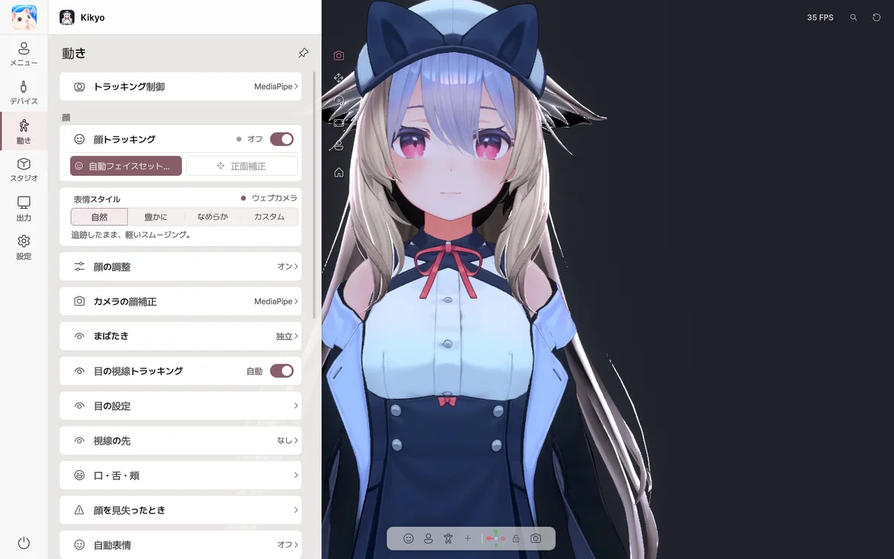
| 項目 | 小さい／オフ | 大きい／オン |
|---|---|---|
| 表情の感度 | 小さい表情には反応しにくく雑音が少ない | 小さな変化も大きく見えるが誇張される場合がある |
| 表情のなめらかさ | 素早く反応するが揺れが目立つ | 柔らかく動くが瞬きや発話が遅れる場合がある |
| リップシンク強度 | 口の開きが小さい | 話すときの口の開きが大きくなる |
| 瞬き感度・自動瞬き | 入力信号を優先 | 小さなまぶたの動きや待機中の自動瞬きが増える |
| 腕の動的／以前の方式 | 以前の方式は 1.1.6 に近い動作を維持 | 動的方式は腕と手の奥行き計算を加えるが、環境によって違いがある |
| 手のなめらかさ | すぐ動くが震えやすい | 震えが減るが動きが遅れる |
| 手の奥行き推定（実験的） | 平面上で比較的安定 | カメラに向かって伸ばす距離を推定するが腕がねじれる場合がある |
| AFK に入るまでの待ち | 一時的なロストでもすぐ待機姿勢 | 短い途切れは無視し、長いロストだけ待機 |
| AFK 切り替え・復帰の時間 | すぐ切り替わる | 徐々に動くが復帰が遅い |
| 待機の呼吸・瞬き | 静止 | 追跡していない間も小さく動く |
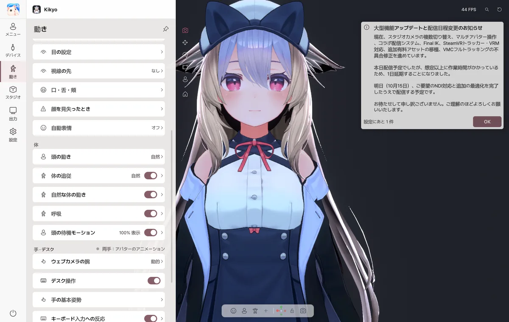
iPhone が接続表示でも、顔の追跡値が古いままなら顔が止まることがあります。元のトラッキング信号、AFK 時間、正面補正を確認してください。保存ポーズの顔・頭・腕・指・胴体５つの追跡スイッチは独立しています。頭 OFF・表情 ONにすると頭の向きを固定したまま表情だけ動かせます。
視線対象をカメラ・人物・なしから選ぶと、どこを見るかが変わります。視線の強度を上げると目や頭が目標を強く追い、下げると元のトラッキングを優先します。実験的な Look At IK によって頭が不自然になる場合はオフにしてください。
顔、体、手がどのように動くかを決めます。設定はアバターごとに保存されます。
フェイストラッキング
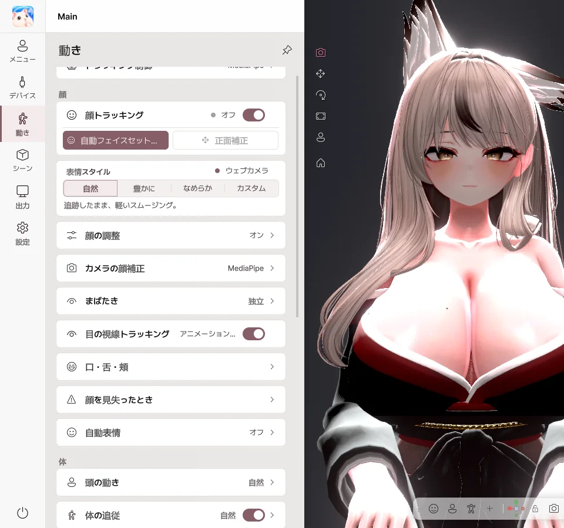
- ミラー — 鏡のように、同じ側に動きます。
- 腕・手・指 — Web カメラで各部位を動かします。
- ジェスチャー → 表情 — 手の形に合わせて、アバターの表情が変わります。
- 顔トラッキング — 表情のトラッキングをオン / オフします。
表情が動くしくみ
顔の表情は アバターに入っている設定にそのまま従います。 Avatar Live がアバターの表情を新しく作ったり、変換したりすることはありません。
| アバターの設定 | 動き方 |
|---|---|
| VRCFaceTracking（VRCFT） のパラメーターがある | アバターの VRCFT 設定で動きます。 |
| ARKit の 52 個のシェイプキー（パーフェクトシンク）がある | そのシェイプキーを直接動かします。 |
| どちらもない | まばたき・リップシンクなど、アバターが持つ基本の表情が中心になり、細かい表情は出ない場合があります。 |
- Webカメラや iPhone が表情を 52 個の単位で読み取っても、アバターに対応するパラメーターやシェイプキーがない表情は出ません。
- シェイプキーが一部だけある場合は、あるものだけが動きます。
今後、52 個の表情をすべて認識してアバターに合わせて接続したり、設定のないアバターでも顔に直接バインドしたりできるよう改善する予定です。時期は変わる場合があります。
自動フェイスセットアップ
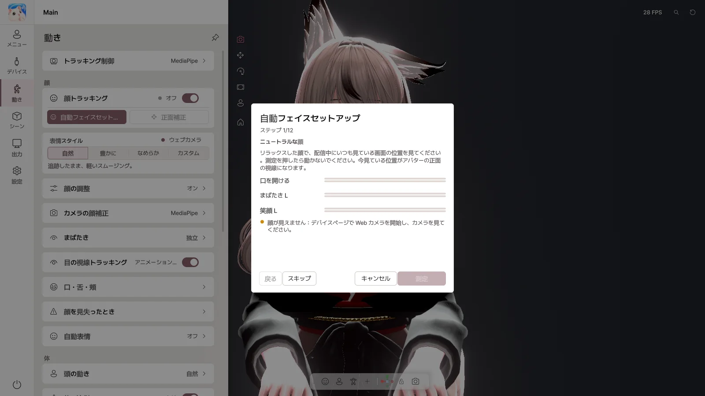
自動フェイスセットアップ ボタンを押すと、キャリブレーションが始まります。画面の案内に従って表情を作り、測定 を押してください。最後に 適用 を押すと、自分の顔に合わせて表情が調整されます。
最初のステップで見ている場所が、アバターの正面の視線になります。配信するときと同じように、画面を見てください。
顔の調整
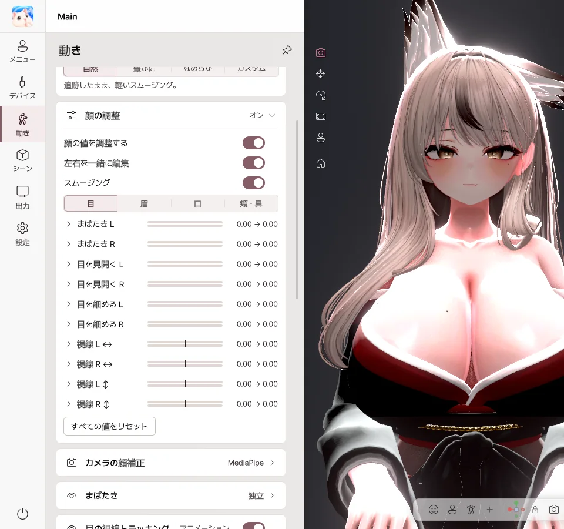
- 目、眉、口、頬の表情をどのくらい大きく出すか、ひとつずつ調整します。
- スライダーを右に動かすと、その表情がより大きく出ます。
- 左右を一緒に編集 をオンにすると、両側が一緒に変わります。
- スムージング をオンにすると、表情のブレが減ります。
まばたき・口
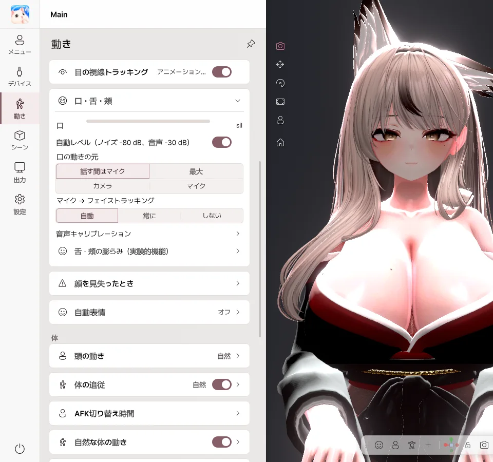
- まばたきの方式 — 独立 はウインクがしやすく、同期 は両目が一緒に閉じます。
- 目の視線トラッキング — 瞳が自分の視線に合わせて動きます。
- 自動レベル — 声の大きさに合わせて、口の大きさを自動で調整します。
- 音声キャリブレーション — 母音のボタンを押して発音すると、自分の声に合わせて調整されます。
- 舌・頬の膨らみ — ボタンやショートカットで、舌を出したり頬を膨らませたりします。
目線とカメラを見る機能
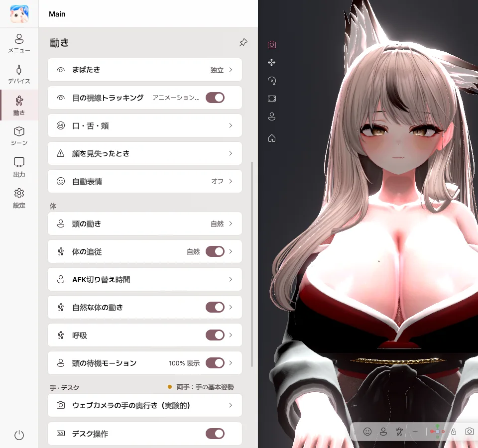
動作 › 顔で目線を調整します。カメラを見る機能をONにすると目線がカメラに向きます。ポーズのフェイシャル追跡がOFFでも独立して動作し、頭の追跡も別のスイッチで管理します。カメラ目線だけでほかの顔の表情がONになるわけではありません。
体
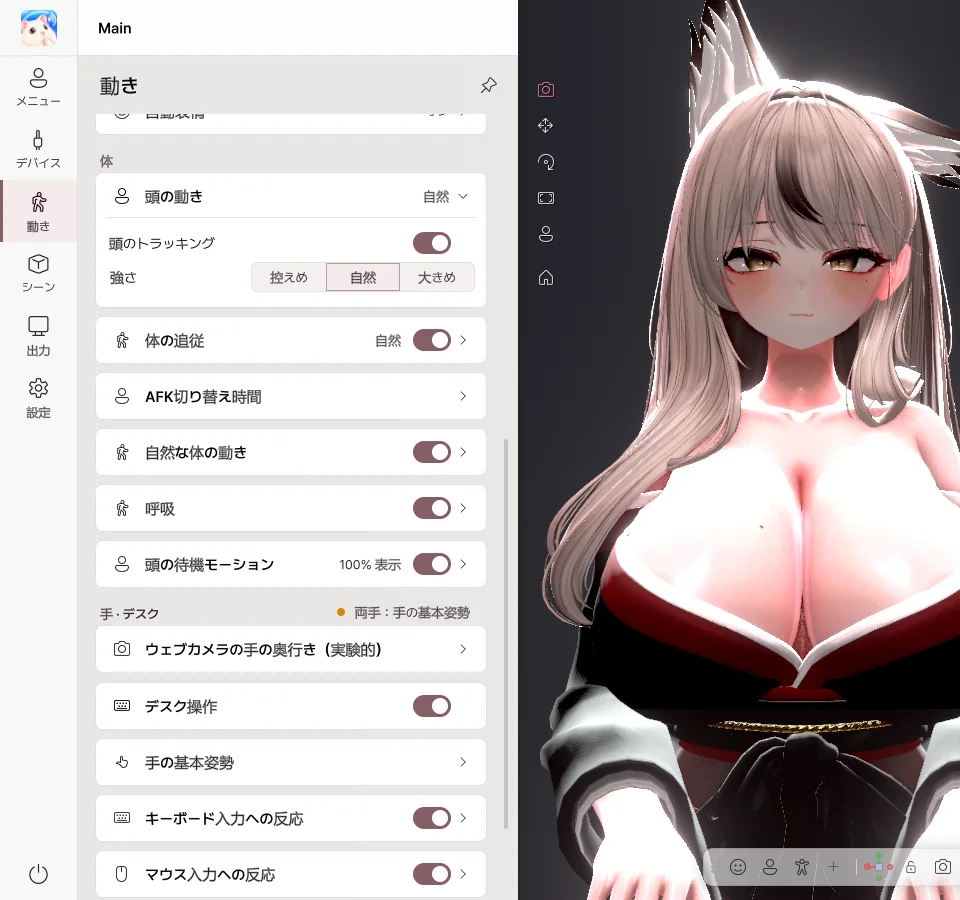
- 頭の動き — 控えめ・自然・大きめ から選びます。
- 体の追従 — 頭の向きを変えると、体も自然についてきます。
- 自然な体の動き・呼吸 — じっとしていても、生きているように動きます。
- 上半身 — Web カメラの全身をオンにすると、肩の動きで上半身が傾いたり回ったりします。脚が映らないデスクの前でも動きます。
- 全身 — 胴体、脚、座る・立つを、Web カメラや VMC で追います。詳しくはデバイス › 全身・指の関節をご覧ください。
AFKの切り替え時間と追跡喪失
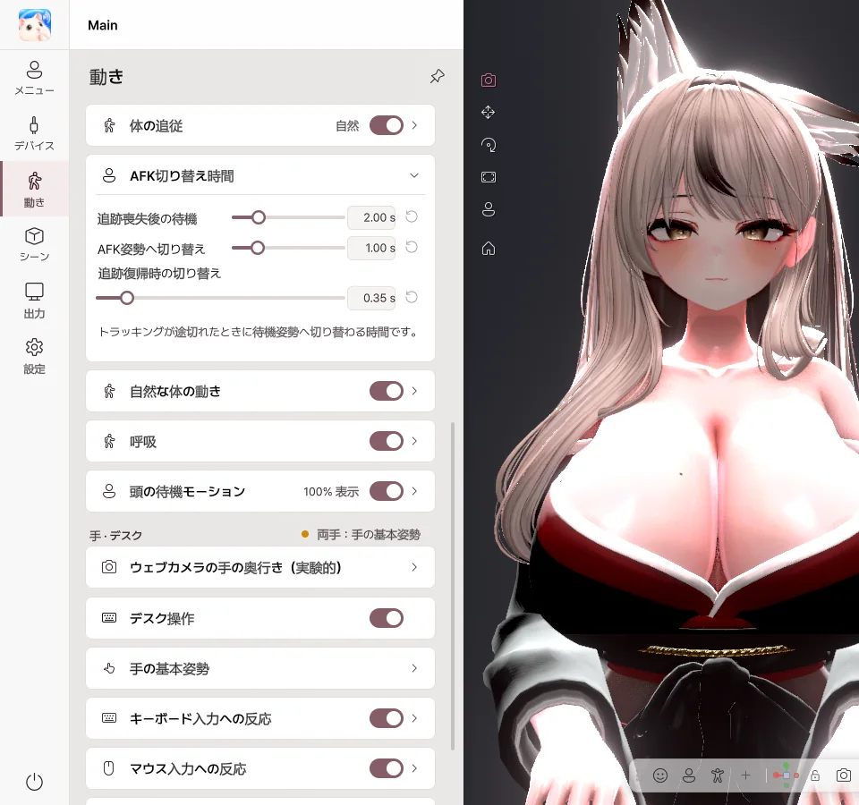
AFKの時間は設定から動作 › 体に移動しました。アバターごとに次の3項目をスライダーまたは数値入力で調整できます。
- 追跡喪失の待機: 一時的に追跡が切れてからAFKへ入るまで待つ時間
- AFKへ移行: 待機ポーズへなめらかに切り替える時間
- 追跡復帰: 追跡信号が戻ってから元の動作に戻る時間
以前の保存値は保持されます。基本ポーズ、追跡喪失時の待機ポーズ、待機中の表情は ポージング で別々に設定します。
Webカメラの手の奥行き推定（実験的）
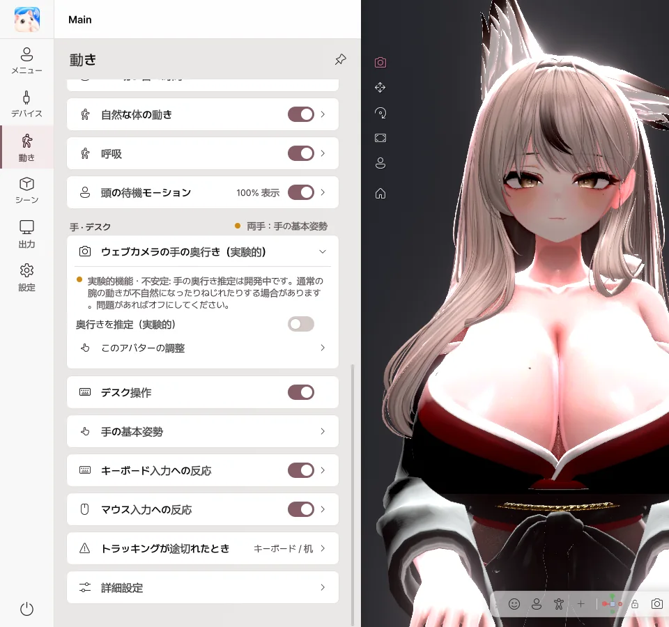
Webカメラに向かって手を伸ばす距離を推定します。カメラによっては腕や手首がねじれたり揺れたりするため、通常はOFFを推奨します。不安定ならまずこの機能をOFFにし、手の揺れ補正を確認してください。
手・デスク
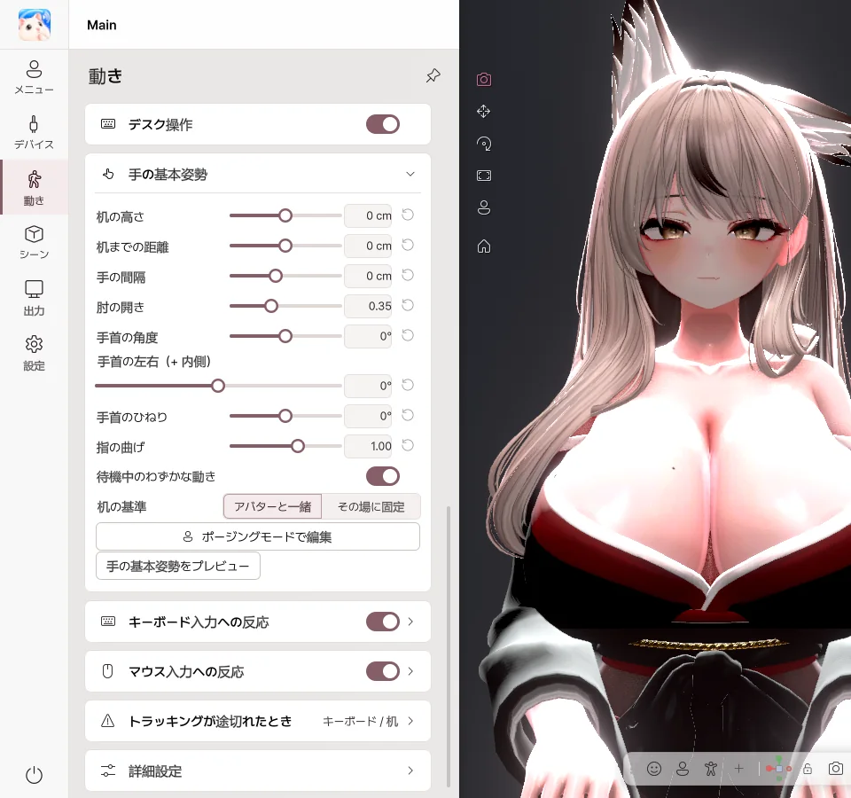
- デスク操作 — 手がカメラに映っていないとき、キーボードとマウスに合わせてアバターの手が動きます。
- 手の基本姿勢 — 机の高さ、手の間隔、手首の角度を合わせます。
- キーボード・マウス入力への反応 — タイピングやマウスの動きの大きさを決めます。
- 手を下ろすとすぐにデスクのポーズになり、また上げると、なめらかにトラッキングに戻ります。体が大きく揺れても、座っていても、ひじが自然についてきます。
- ポージングで作った腕・手のポーズを、机のポーズにする でデスクのポーズにできます（Pro）。
キーボード入力はアバターの手を動かすためだけに使われ、入力した文字を保存・送信することはありません。
💡 舌・頬の膨らみのカメラ検出は、試験的機能です。